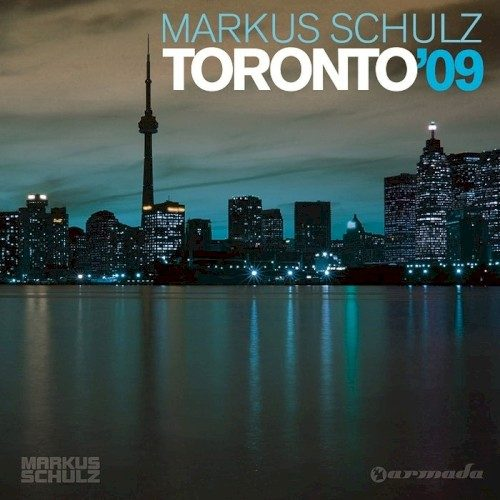

Various Artists - Toronto '09, mixed by Markus Schulz


Last year Markus Schulz elicited a few giggles from his fans when he introduced his Essential Mix on BBC1 by describing his sound as “progressive, melodic, bassline-driven tech trance” – all in his unmistakable hybrid American/German accent, of course. We might have laughed, but it’s actually a fairly accurate way to describe the Coldharbour Recordings chief’s progressive approach to the trance genre. He’s moved forward in leaps and bounds over the past 12 months, returning in March this year again for Future Music Festival but this time, as one of the tour’s headliners. If Armin van Buuren is the trance scene’s benevolent leader, then Markus Schulz has risen to take position as captain of the trance underground. With Toronto ‘09 he’s delivered his best compilation yet that mirrors his technical talent as a DJ more closely than anything we’ve heard from him before.
It’s best to say right off the bat that Toronto ‘09 is far from a straightforward collection of euphoric anthems, and there’s not a lot here that’s particularly comfortable or predictable. It’s a proper “progressive” release where each disc needs a proper listen from start to finish, but ultimately it’s a lot more than the sum of its parts, making it more rewarding and something that’ll live on in your CD collection. The “progressive” angle is amped up particularly on the first disc, and for the most part it’s a beautifully low-key affair, the sort of deeper sounds we usually hear from Markus in the opening moments of his live sets. It’s not often you get treated to a mix as superbly crafted as this, and its focus is even reminiscent of some of Sasha’s early (and seminal) Global Underground releases – it’s deep, without ever straying too far from the melodic stuff.
Karnak vs. Dymos’ Travail is a classic Schulz selection, with his trademark deep basslines pushing through into a gorgeous melodic breakdown. Vocal tracks like Moonbeam’s remix of Crash Into Reason are used sparingly and effectively, and the transition into meatier stuff like Skytech’s Cardboard Box is masterfully done. The mix peaks gloriously with Rex Mundi’s Nothing At All, perhaps one of the best examples ever of how to do anthemic vocal trance without it becoming cheesy; and the closing selection from Omnia is a definitive prog trancer, delicious melodies and driving basslines. Overall though it’s not a pumping your fist in the air kind of mix, but it’s got a whole lot more to offer than that. Beautiful flow, deep rhythms and plenty of emotion, with flawless programming. Absolutely divine.
If the vibe of the first disc of Toronto ‘09 is decidedly progressive, the second mix explores the deeper side of the tech-influenced trance that’s getting heard at the moment. The tempo picks up immediately with an offering from Markus’s own Dakota alias, the production mask he dons to showcase his darker musical side, but there’s some seriously moody and intense selections on the first half of this mix. It’s a journey that shakes you back and forth without allowing you to fall into too much of a groove. The pace might slacken into something a little softer, before it jacks up again into a intense buildup that surprises again when it hits its peak; often stripping out the melody again and slamming in an electro bassline.
Rowan Seyn’sHold Control is a tech-trance masterpiece: dark, driving, brooding and emotional all at the same time. Like the mix itself, there’s not a sign of anything formulaic in the slightest, and it’s all pretty restrained until things really kick into drive with one of Markus’s infamous ‘Return to Coldharbour’ remixes. The mix ends with the sort of driving, bassline-heavy progressive-tech trance that his fans know him best for (see what I did there), taking things out on a euphoric note.
If we hadn’t realised it already, Toronto ‘09 showcases Markus Schulz as one of trance and progressive’s most impressive and forward-thinking DJs. As far as his approach to pacing and programming goes, he’s got all the polish of a progressive house veteran like Digweed, Lawler or Cattaneo. If there’s any mix CD out there to prove that trance is full of unexpected surprises, then this is it. If you’re willing to take a journey into the deeper, darker side of trance, then you owe it to yourself to have a listen to Toronto ‘09.
Check out the tracklisting…
Disc one:
01. Dino – Queensquay And Jarvis
02. Thomas Sagstad – Backfire
03. ClAud9 – Rain (Coldharbour Rework)
04. Karnak vs Dymos – Travail
05. Tritonal feat. Cristina Soto – Crash Into Reason (Moonbeam Remix)
06. Rex Mundi – Scorpion
07. Arnej – Tomorrow Never Comes 08. Tenishia – Everything (Tim Grube Dub Remix)
09. Skytech – Cardboard Box
10. Mr. Pit – The Cube
11. Rex Mundi feat. Susana – Nothing At All
12. Max Gueli – Remember The Silence
13. Adiva feat. Vicky Fee – How Does It Feel
14. Omnia – Stick In Monday
Disc two:
01. Dakota – Koolhaus
02. Umek & Beltek – Is It? (Wippenberg Remix)
03. Dakota – Sin City
04. Rowald Steyn – Hold Control
05. Mike Foyle – Bittersweet Nightshade (Markus Schulz Return to Coldharbour Remix)
06. Mr. Pit – Besides Words
07. Danilo Ercole – Harbour
08. Dance 2 Trance – Power of American Natives (Markus Schulz Return to Coldharbour Remix)
09. Project MC – Bromley Ave
10. Michael Calderone & Christopher Reddick – Sound Of Flight
11. Khaz & Boris M.D. – Eliana
12. Element One – South Haven
13. Barnes & Heatcliff – Pyjamaparty
14. Arnej – Dust In The Wind